몬드킴
SDF 2026 · BOOTH Y-42
LOOKBOOK
Lookbook · 2026.11.26–29
서디페 2026 룩북
사진 · 사이즈 · 가격 · 소재 · 생산지로 정리한 컬렉션 시트입니다. 실크와 오간자 위의
검은 장미에서 출발해, 회화의 선과 여백을 부채와 도자, 테이블로 옮겼습니다.
원화 페인팅 · 오브제 · 에디션 · 가구 네 가지로 구성했습니다.
01
원화 페인팅
천 · 부채 · 회화Painting works
TEXTILE · 천작품 3종

Suspended Field
공중에 머문 장면 · 3패널
180 × 330 cm · 가변 (패널당)
오간자 · 실크 · 유채 (Oil on Organza & Silk)
생산지 대한민국 · 서울 (작가 제작)
2,200,0001,980,000원

Held by Nothing
붙들리지 않은 장면
110 × 240 cm
천연 실크 · 유채 (Oil on Silk)
생산지 대한민국 · 서울 (작가 제작)
3,500,0003,150,000원
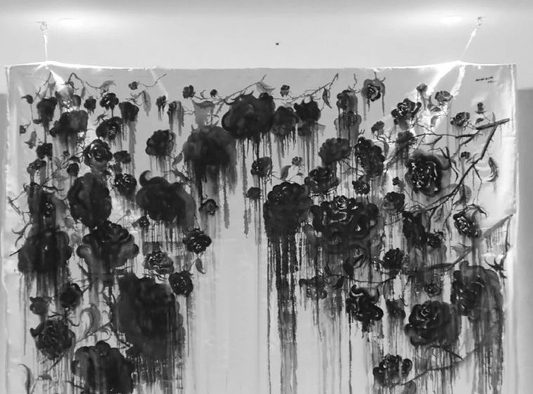
Perpetual Cascade
영원한 폭포
193 × 260 cm
무틀 코튼 캔버스 · 유채 (Oil on Unstretched Cotton Canvas)
생산지 대한민국 · 서울 (작가 제작)
4,800,0004,320,000원
실측 — Suspended Field 180 × 330 cm (variable · 3패널), Held by Nothing 110 × 240 cm,
Perpetual Cascade 193 × 260 cm. 서울 무료배송 · 지방/설치 별도.
01
부채 원화
실크 · 오간자 · 벽면 설치Fan paintings
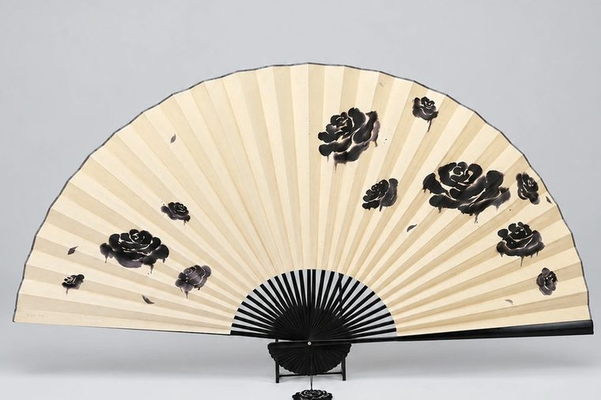
Fan Painting XL
부유하는 장미 · Floating Rose
120 × 220 cm
실크 · 오간자 · 유채
생산지 대한민국 · 서울 (작가 제작)
1,800,0001,620,000원
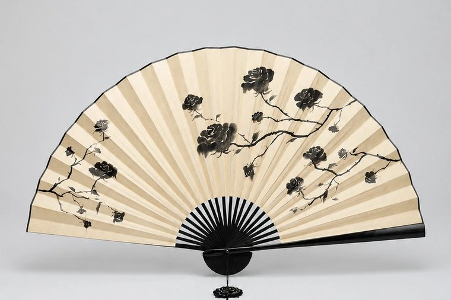
Fan Painting L
장미나무 · Rose Tree
90 × 160 cm
실크 · 오간자 · 유채
생산지 대한민국 · 서울 (작가 제작)
1,100,000990,000원
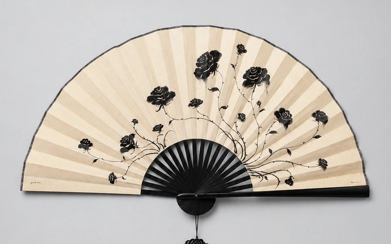
Fan Painting M
장미 덩쿨 · Rose Vine
63 × 113 cm
실크 · 오간자 · 유채
생산지 대한민국 · 서울 (작가 제작)
680,000612,000원
Fan Painting S
장미 정원
50 × 88 cm
실크 · 오간자 · 유채
생산지 대한민국 · 서울 (작가 제작)
480,000432,000원
S의 촬영본은 준비 중이며 부스에서 실물로 확인하실 수 있습니다.
01
회화
원화 · 각 1점Paintings
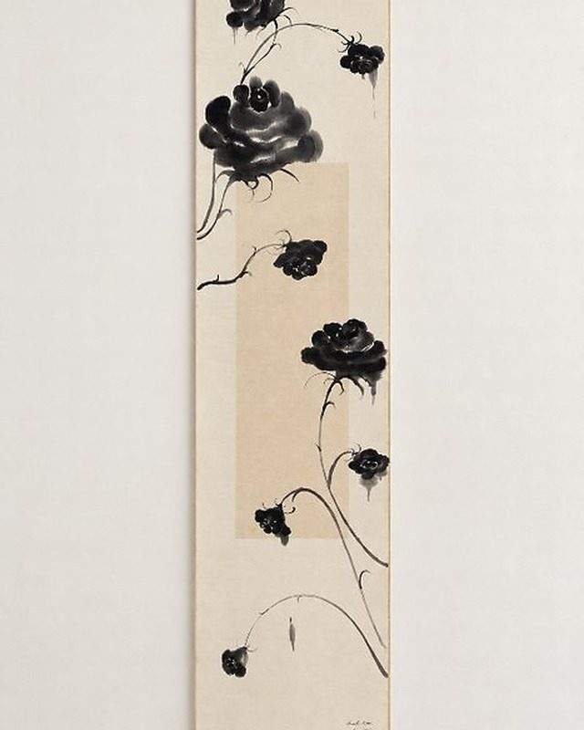
Scroll Painting · 33 × 138 cm
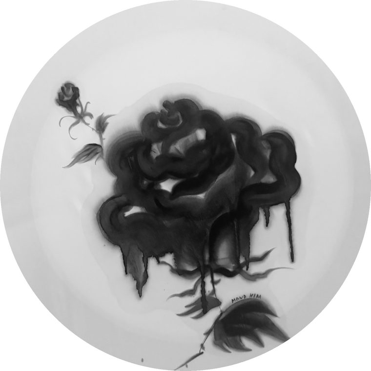
Oval Works · 타원 작업 · 50 cm
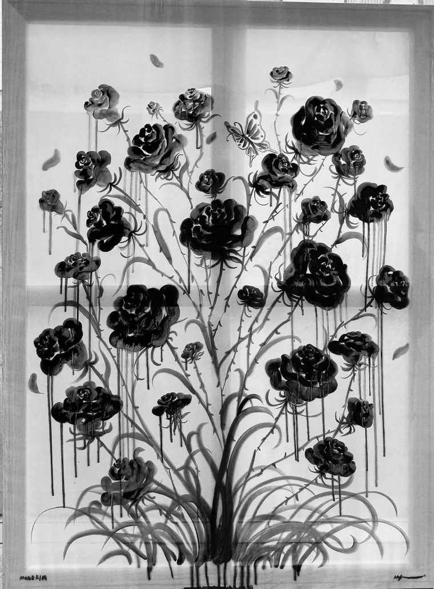
Dance of Light and Shadow · 130 × 97 cm
Scroll Painting · 두루마기 원화
33 × 138 cm · Oil on scroll · 무료배송
450,000405,000원
Oval Works 1 · 2 · 3 · 타원 작업
50 cm (타원) · 각 · Oil on Silk Wood Panel · 무료배송
550,000495,000원
70 × 70 cm 회화
70 × 70 cm · 4종 · 각 · Acrylic on Canvas · 서울 무료
1,100,000990,000원
Untitled · 무제
76 × 76 cm · Oil on Silk Wood Panel · 서울 무료
1,200,0001,080,000원
130 × 97 cm 회화
130 × 97 cm · 7종 · 각 · Oil on Silk Canvas · 서울 무료
2,200,0001,980,000원
In Glass · 반전
82 × 97 cm · Oil on Framed Mirror · —
—
In Glass는 비매품입니다. 생산지 — 대한민국 · 서울 (작가 제작).
02
오브제
서디페 한정 무료배송Objets

NO. 01
Archive Bloom
기억의 꽃 화병
22 × 29 cm
손그림 도자 (Hand-painted Porcelain)
생산지 확인 필요
398,000358,200원
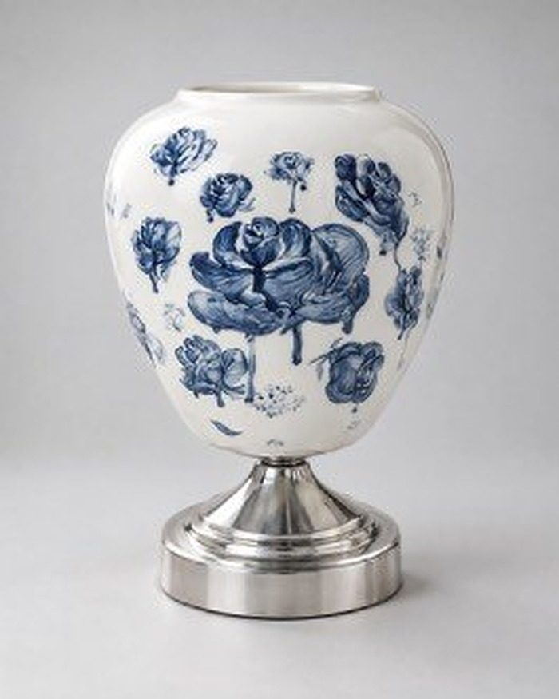
NO. 02
Blue Rose Cascade
푸른 장미 화병
22 × 29 cm
손그림 도자 (Hand-painted Porcelain)
생산지 확인 필요
398,000358,200원

NO. 03
Floating Rose
떠있는 장미 화병
22 × 29 cm
손그림 도자 (Hand-painted Porcelain)
생산지 확인 필요
398,000358,200원

NO. 04
Black Garden
검은 정원 화병
22 × 29 cm
손그림 도자 (Hand-painted Porcelain)
생산지 확인 필요
398,000358,200원
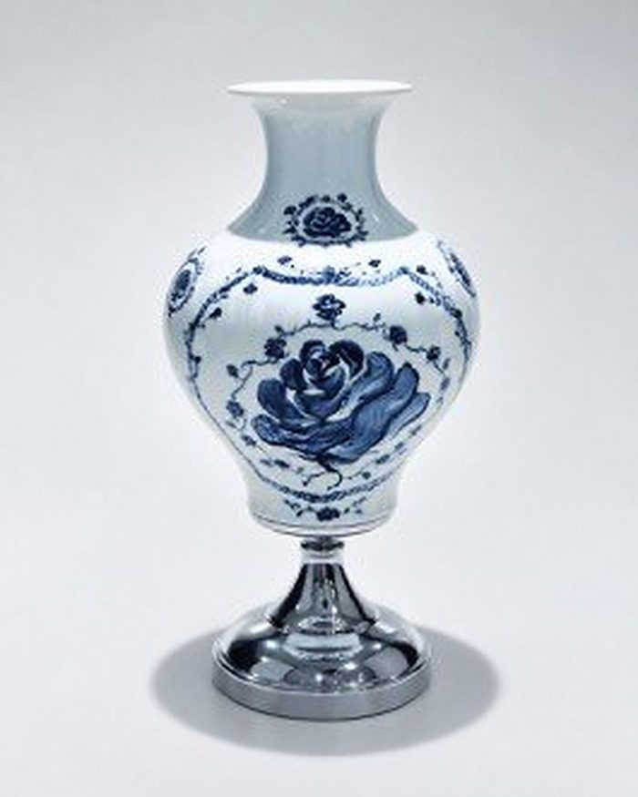
NO. 05
Garden Fragment
정원의 조각 화병
22 × 44 cm
손그림 도자 (Hand-painted Porcelain)
생산지 확인 필요
450,000405,000원
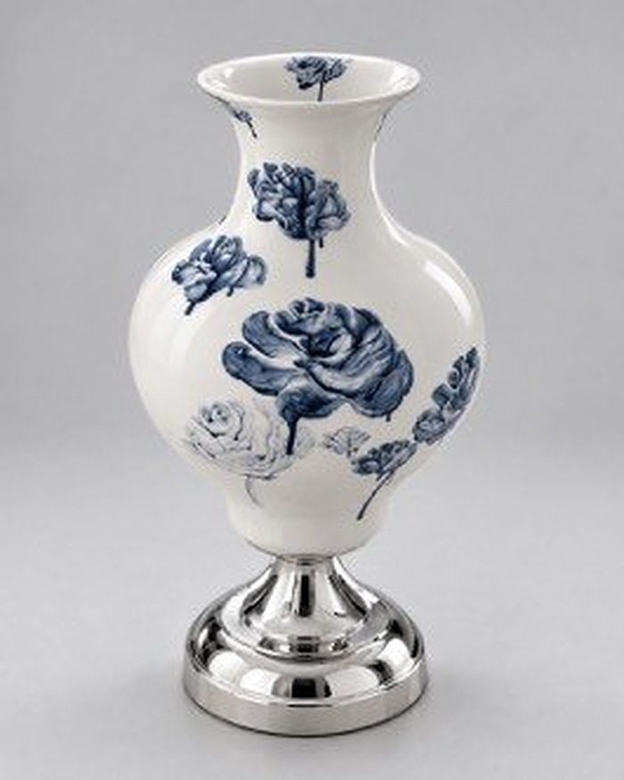
NO. 06
Garden of Memory
기억의 정원 화병
22 × 44 cm
손그림 도자 (Hand-painted Porcelain)
생산지 확인 필요
450,000405,000원
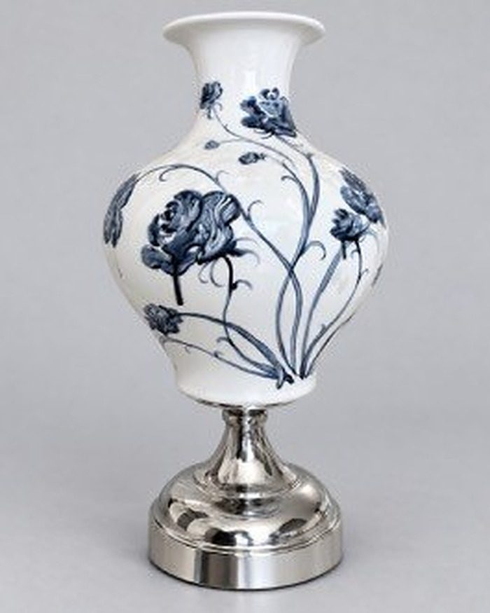
NO. 07
Silent Garden
고요한 정원 화병
22 × 44 cm
손그림 도자 (Hand-painted Porcelain)
생산지 확인 필요
450,000405,000원
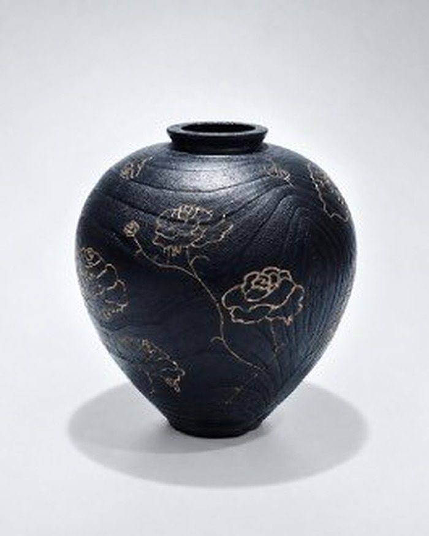
NO. 08
Burnt Rose Vessel 01
장미 음각 탄화목 화병
25 × 27 cm
탄화목 · 손조각 (Hand-carved Charred Wood)
생산지 확인 필요
480,000432,000원
Burnt Rose Tray 01
번트 로즈 트레이 · Ø25 × H7 cm · Hand-carved Charred Wood
150,000135,000원
Rose Relic 01
호박빛 장미 촛대 · Rose Relic 시리즈 · 캔들 5구 · 총 2개 보유
150,000135,000원
장미 앤틱 촛대
Antique Rose Candlestick · Rose Relic 시리즈
158,000142,200원
개발 중 — Reflected Vessel · Vessel on Silk · Brick Vase.
출시 일정과 가격은 별도 문의로 안내합니다.
03
에디션
부스에서 바로 수령Editions
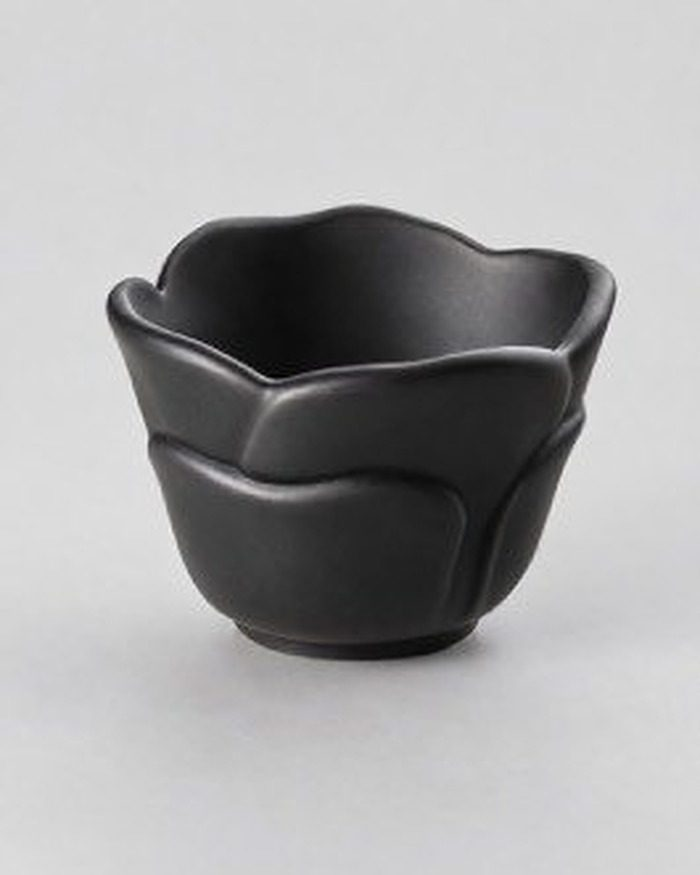
Black Rose Cup — Bloom
블랙 로즈 잔 · 높은 잔
70.6 × 72.0 × 52.1 mm
도자 · 검은 유약 · 손그림
생산지 확인 필요
최종가 38,000원
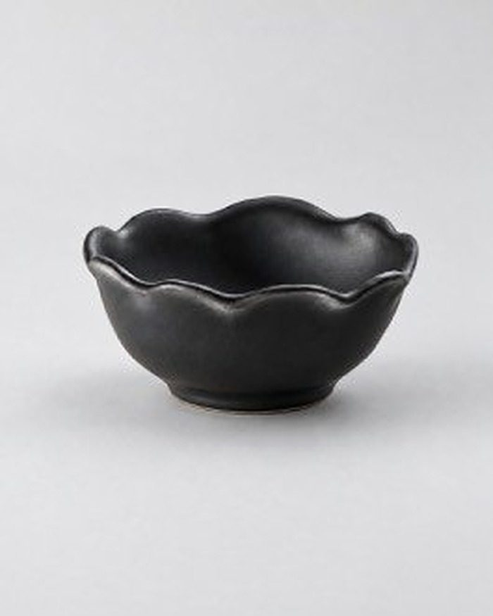
Black Rose Cup — Fold
블랙 로즈 잔 · 낮은 잔
66.2 × 68.9 × 34.4 mm
도자 · 검은 유약 · 손그림
생산지 확인 필요
최종가 38,000원
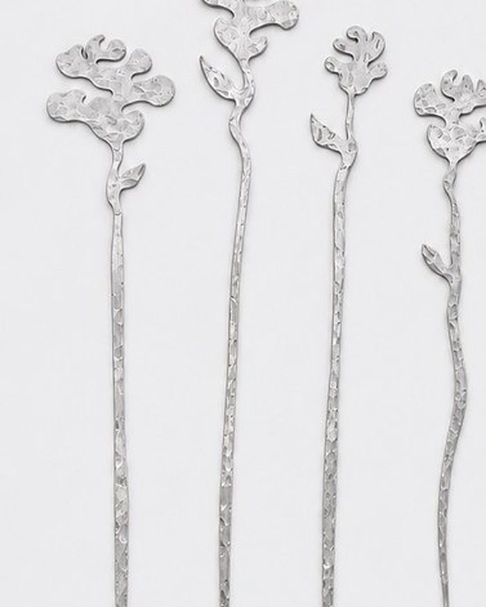
Rose Stem 티포크
단품
12 · 14.5 · 13.5 cm (3종)
금속 마감
생산지 확인 필요
2개 26,100원 · 4개는 세트 50,400원
15,00013,500원
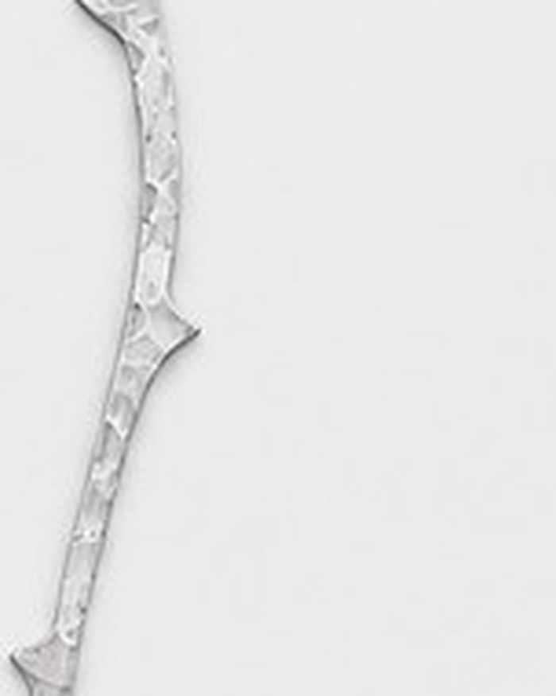
Rose Stem 머들러
단품
17 cm
금속 마감 · 손그림
생산지 확인 필요
2개는 세트 32,400원
19,00017,100원
찻잔(Black Rose Cup) · 머들러(Rose Stem) · 손부채(Hand Fan 02)는 작가가 직접 그리고 완성하는 수작업 품목입니다. 같은 디자인이라도 그림의 위치와 붓 터치, 유약의 흐름이 한 점씩 달라 개별 작품마다 표현이 모두 다릅니다.
세트는 단품으로 따로 사는 것보다 저렴합니다 — 찻잔 2개 76,000 → 66,600원 · 머들러 2개 34,200 → 32,400원 · 티포크 4개 54,000 → 50,400원.
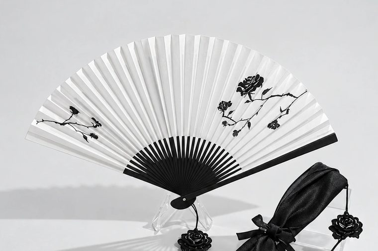
EDITION · 02
Hand Fan 02
14인치 손부채 · 직접 드로잉 · 노리개 포함
14인치 (약 42 cm) · 노리개 포함
종이 부채 · 직접 드로잉 · 노리개
생산지 확인 필요
최종가 78,000원
한정 수량 · 재제작 없음
Hand Fan 02는 03 에디션에 속해 있지만 성격상 오브제에 가까운 작품입니다. 한정 수량만 제작하며, 솔드아웃(품절) 이후에는 다시 만들지 않습니다(재제작 없음).
03
라이프 에디션
키링 · 거울 · 스카프 · 티셔츠 · 러그Editions · life
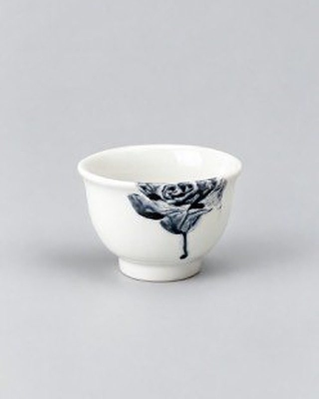
NO. 01
Rose Vine Cup
장미 덩굴 찻잔 · 실크 프린트
1 · 2 · 4개 구성
도자 · 실크 프린트
생산지 확인 필요
2개 55,800원 · 4개 108,000원
32,00028,800원
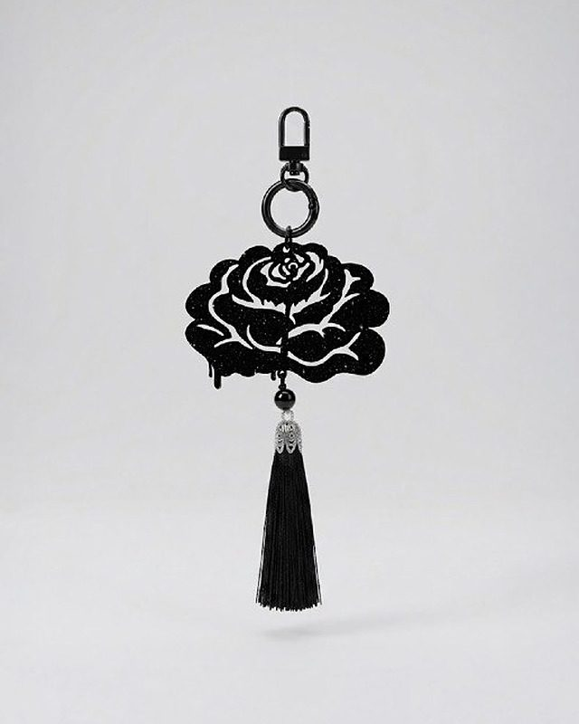
NO. 02
Black Rose Keychain
블랙 로즈 노리개 키링 · Edition 01
스테인리스 · 노리개 장식
생산지 확인 필요
22,00019,800원
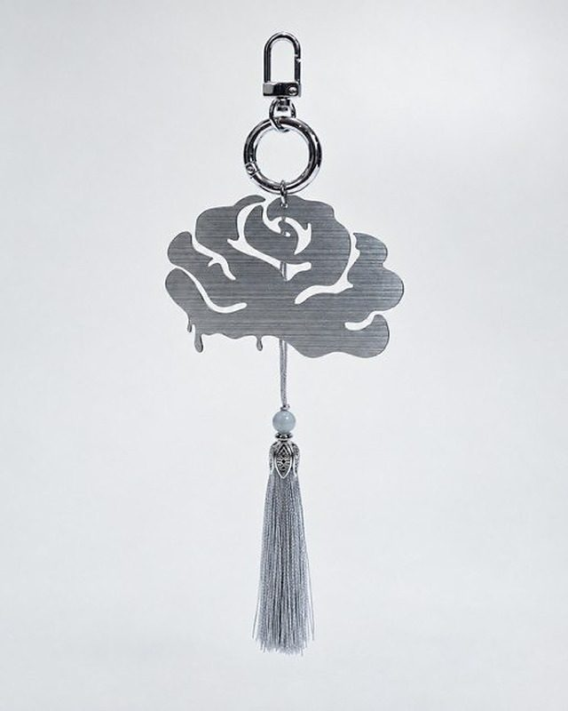
NO. 03
Silver Rose Keychain
실버 로즈 노리개 키링 · Edition 02
스테인리스 · 노리개 장식
생산지 확인 필요
28,00025,200원
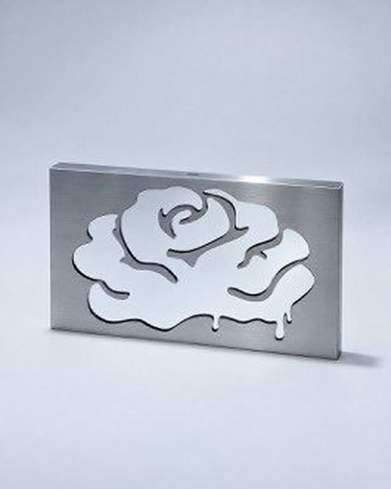
NO. 04
Silver Rose Mirror
실버 로즈 거울 · Edition 01
스테인리스 거울
생산지 확인 필요
68,00061,200원
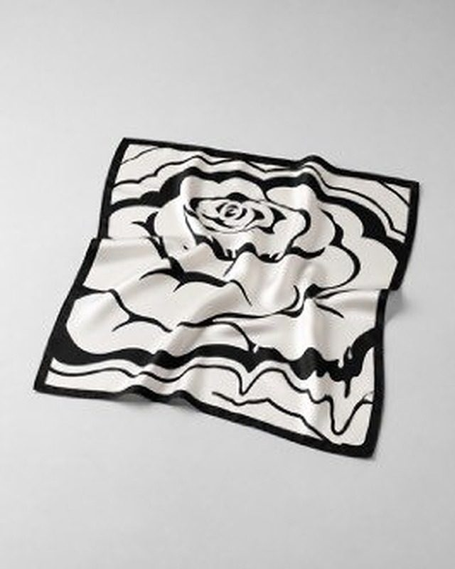
NO. 05
Silk Scarf
블랙 로즈 실크 스카프 · Edition 01
실크 · 블랙 로즈 프린트
생산지 확인 필요
68,00061,200원
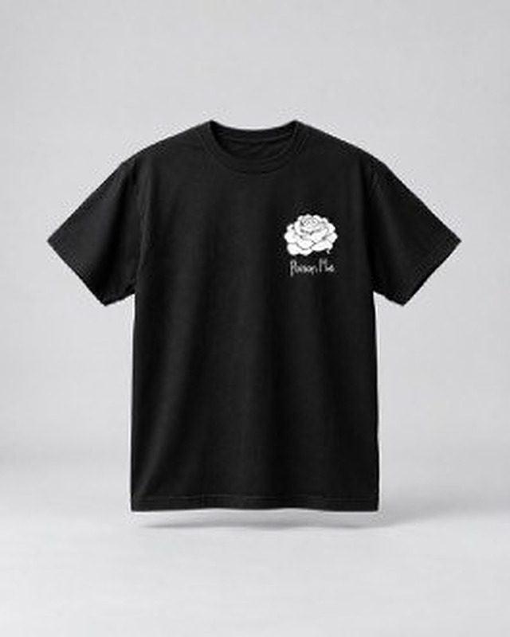
NO. 06
Studio T-shirt
블랙 로즈 티셔츠 · Edition 01
면 · 로즈 그래픽
생산지 확인 필요
42,00037,800원

NO. 07
Black Rose Art Rug 01
아트 러그 · Edition 01
아트 러그 · 블랙 로즈 그래픽
생산지 확인 필요
78,00070,200원
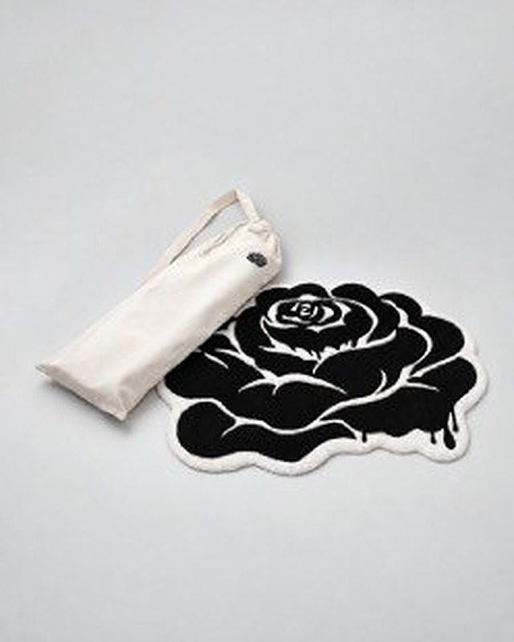
NO. 08
Black Rose Art Rug 02
아트 러그 · DTF · Edition 01과 동일 그래픽
80 × 100 cm
아트 러그 · DTF
생산지 확인 필요
78,00070,200원
찻잔은 2개 · 4개 구성으로 묶을 수 있습니다. Art Rug 01·02는 동일 그래픽이며 02는
80 × 100 cm DTF입니다. 장미 앤틱 촛대는 오브제 섹션에 있습니다.
04
가구
서울 무료 · 지방 별도Furniture
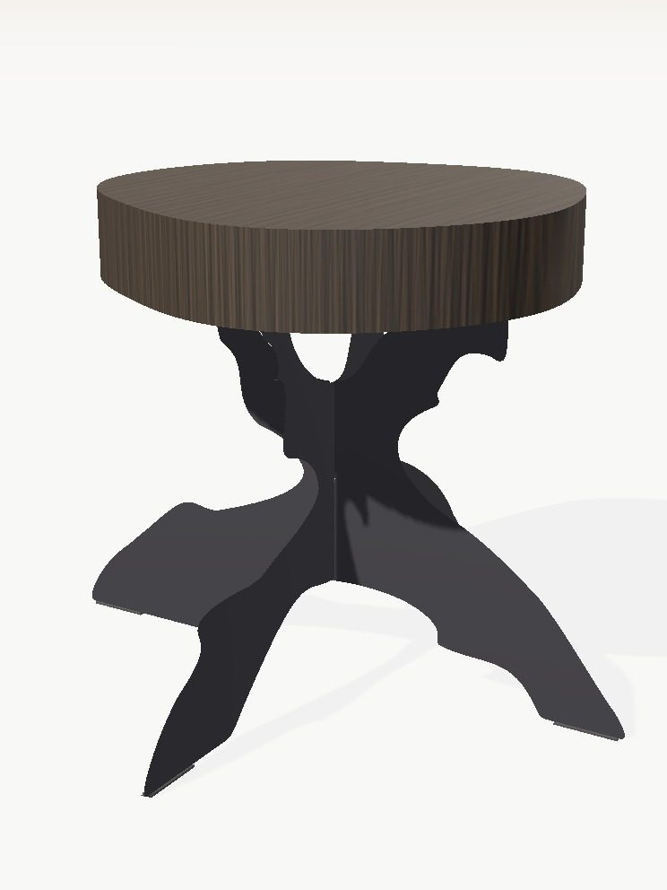
440 스툴
하부 폭 600 · 좌고 460
고재 80T · 흑색 철판 다리
생산지 확인 필요
280,000252,000원

Rose Tall 테이블
380 · 높은 테이블
유리 Ø380 · H750
강화유리 · 철제 프레임
생산지 확인 필요
480,000432,000원
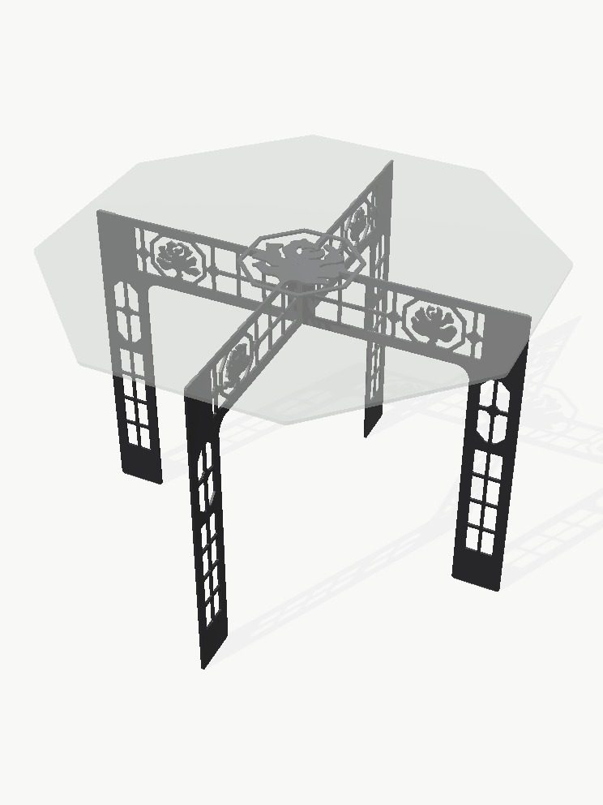
Rose Open 테이블
1000 · 팔각 테이블
맞변 1000 · H732
팔각 유리 8T · 철판
생산지 확인 필요
820,000738,000원
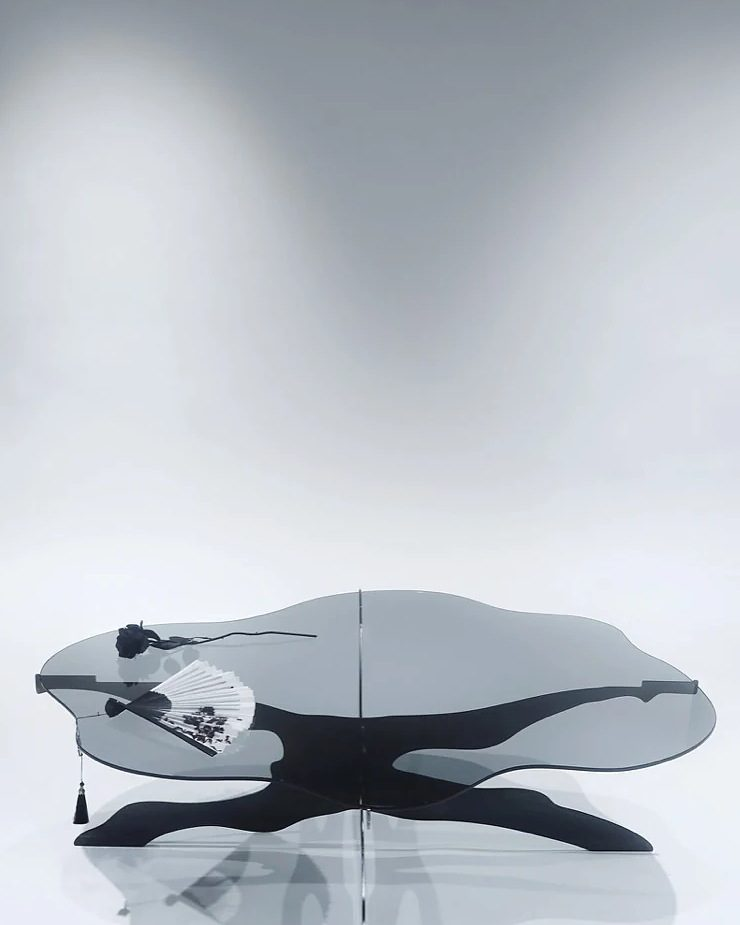
Rose Low 테이블
1300 · 낮은 테이블
1300 × 950 · H402
회색 강화유리 8T · 철판
생산지 확인 필요
980,000882,000원
주문제작 · 커스텀 사이즈 — 공간의 크기와 사용 방식에 맞춰 판재 크기와 상판,
다리 구조를 조정합니다. 현장에서 치수를 확인한 뒤 제작 일정과 견적을 안내합니다.
—
표기 기준
Notes
SIZE표기한 실측 최대치. 수작업 품목은 한 점씩 오차가 있습니다.
MATERIAL작가가 직접 적은 재료와 마감. 유약 · 금속 마감의 편차는 개체 차이입니다.
ORIGIN생산지. 기록으로 확인된 품목만 기재했습니다.
PRICE서디페 기간 최종가. 정가와 다를 경우 취소선으로 함께 표기했습니다.
생산지 — 작가가 직접 제작하는 원화는 대한민국 · 서울로 적었습니다. 완제품·부자재 품목에
확인 필요로 표시된 곳은 기존 기록에서 생산지를 확인하지 못한 자리입니다. 인쇄 전에 확정해 주세요.
—
작가
Artist
회화의 선을 사물과 공간으로.
MONDKIM 몬드킴은 시각예술가 김현지의 아티스트 브랜드입니다.
실크와 오간자 위의 검은 장미에서 출발해, 회화의 선과 여백을 부채와 도자, 테이블로 옮깁니다.
홍익대학교 섬유미술 · 패션디자인
Nike Korea 브랜드 마케팅 디자인
Nike Korea
CASETiFY
까사 알렉시스 팝업
Lenovo × 현대백화점 드로잉 클래스
—
B2B · 협업
Commissions
작품의 장미를 공간과 브랜드의 언어로 옮깁니다. 세 가지 방식으로 협업하며,
수량 · 일정 · 예산에 맞춰 견적을 드립니다.
01
호텔 · 부티크 스테이 · 하이엔드 쇼룸
공간 디렉터 · 구매 담당
- 로비 · 라운지용 대형 실크 · 오간자 원화 (설치 · 대여)
- 장미 테이블 · 440 스툴 커스텀 제작 (판재 · 상판 유리 · 치수 조정)
- 도자 화병 · 탄화목 오브제 공간 패키지 납품
공간 실측 → 시안 → 제작 일정 협의
02
패션 · 뷰티 · 라이프스타일 브랜드
브랜드 마케팅 · VMD · 팝업 기획
- 팝업 · 쇼윈도 아트워크 연출 (실크 패널 · 설치형 오브제)
- 브랜드 콜라보레이션 · 리미티드 에디션 디자인
- VIP · 프레스 기프트 — 블랙 로즈 에디션 (찻잔 · 티포크/머들러 · 키링 · 스카프)
각인 · 전용 패키지 · 대량 납품 견적
03
기업 · 백화점 문화 프로그램
문화 프로그램 · HR · MD
- VIP · 임직원 대상 아티스트 드로잉 워크숍
- 브랜드 데이 · 전시 연계 클래스 기획 · 출강
- 재료 · 태블릿 · 결과물 출력까지 운영
레노버 × 현대백화점 드로잉 클래스 운영
FOR A QUOTE · 문의 시 함께 알려주시면 바로 견적을 드립니다
기관 · 브랜드명회사/기관 이름과 담당자
용도 · 타겟공간 · 팝업 · 기프트 등 목적과 대상
희망 품목 · 수량품목과 필요 수량 (커스텀 여부)
일정설치·납품 희망일과 예산 범위
—
온라인
Print ↔ Web